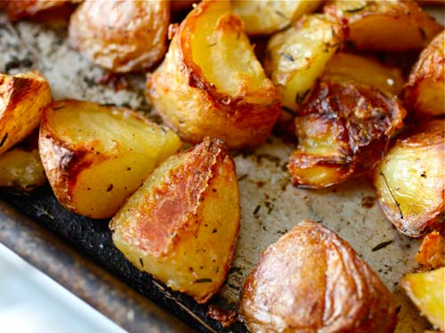

Crispy Potatoes
Submitted by Sarah Ijaz
Here's a tip: before frying or baking your potatoes, soak your sliced potatoes in water overnight. This will get rid of excess starch and make sure your pieces don't stick together. Get your potatoes as crispy as possible! Don't settle!
image source